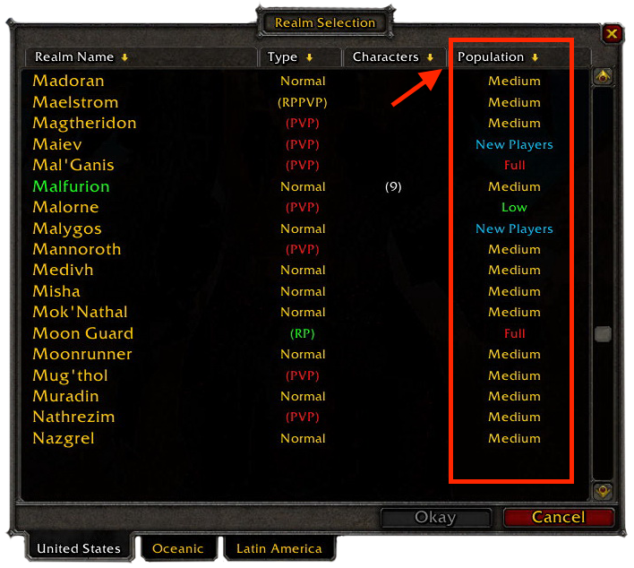
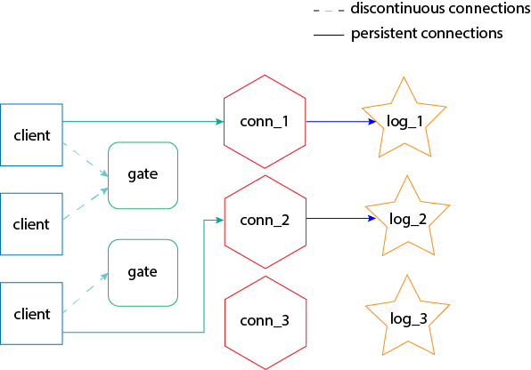
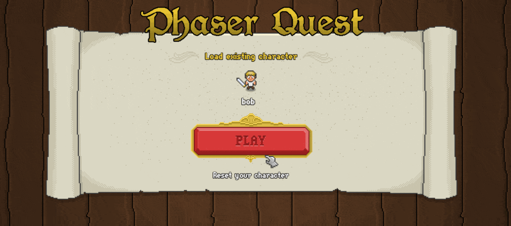
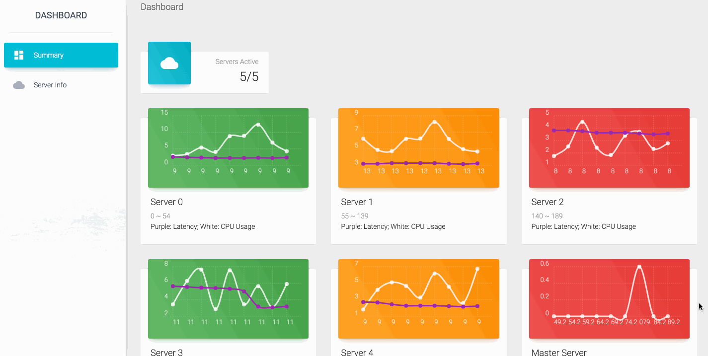
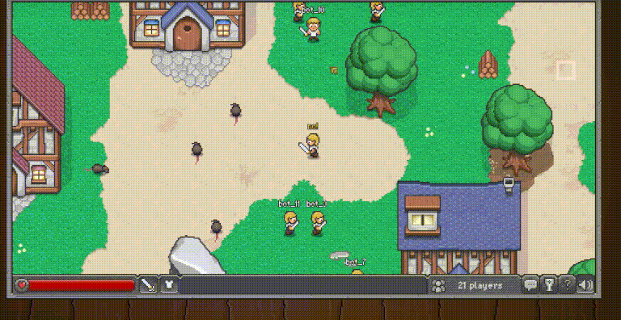

Load Balancing for Virtual Environments in Distributed Systems
Sara Chen
(Supervisor: Dr Frederick Li)
Background
-
Push for more immersive experiences resulting in more complex virtual environments
-
To cope, most virtual environments are now hosted on distributed systems

Problems
Consistency must be maintained, but this is difficult because:
- Unreliable nature of networks
- Race conditions
- Enforcing guaranteed delivery takes time and bandwidth
Leads to the
overloading problem
Added Complexity
Trade-off between contradictory objectives:
- Time-critical system
- Delivery and ordering of messages need to be guaranteed
Static Load Balancing
The de facto standard used across industry due to simplicity
- Relies on players to choose
- Divides up virtual environment into regions
- Uses masking techniques

Weaknesses
- Cannot adapt to unexpected user behavior
- Not resilient towards component failure
- Overprovisions resources
Planning
- Researched existing work
- Chose open source frameworks and tools

Logic Servers
Responsible for executing game logic and maintaining state of virtual environment

Redis Server
Acts as a message queue and guarantees that a client continues to receive updates on an area of interest that spans different servers
Master Server
Monitors requests and status of each component

Gate Server
Assigns newly-connected clients to a logic server
AI Bots
Sufficient to generate the traffic needed to stress servers

Evaluation Methods
Latency
Estimated using a ping-pong scheme
Median latency is used to prevent data from being skewed
CPU Utilization
- Watches for overloading on components
- Verifies if workload has been distributed evenly across the system
Dynamic Load Balancing
Built around the idea of utilizing the properties of the
Fibonacci Heap
| Operation |
Binary Heap |
Binomial Heap |
Fibonacci Heap |
| findMin |
1 |
log n |
1 |
| insert |
log n |
log n |
1 |
| decreaseKey |
log n |
log n |
1 |
| Merge |
n |
log n |
1 |
Improved AI Behavior
AI bots can be given more complex behavior based on population movement to better resemble human players
Hotspots can be added to emulate production environments